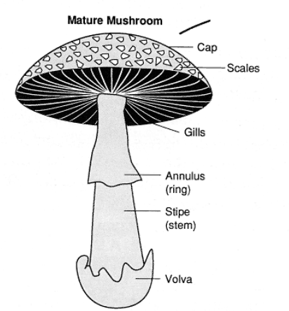
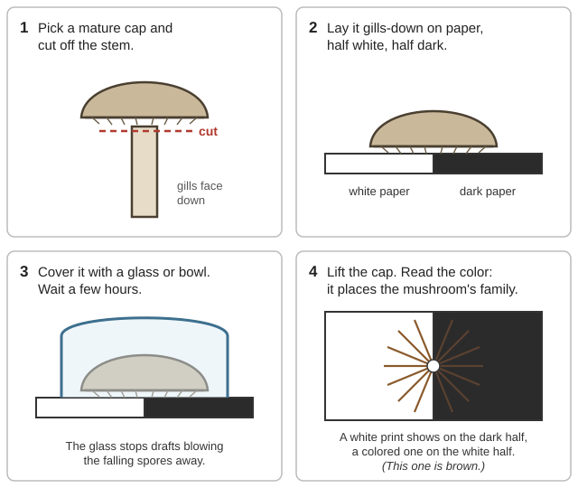
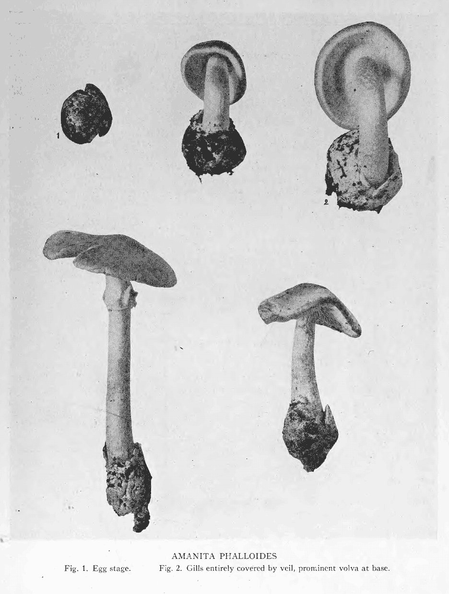
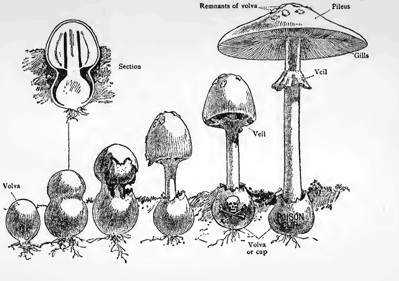
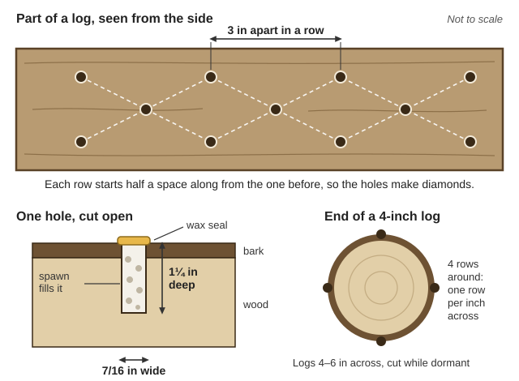
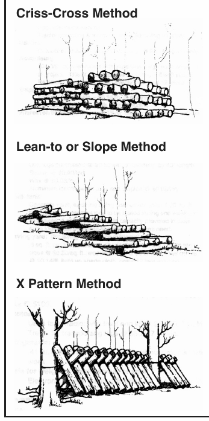

Guides › Living off the land · Emergency · Index A–Z
How to identify, use, preserve and grow mushrooms in the Illinois Valley — and how not to die doing it. The field guides, poisoning reports and growing manuals are in Mushrooms\ (Identification, Poisoning-Safety, Uses-Growing-Preserving). Wild-Plants\ also has the Forest Service Wild Edible Mushrooms of the Pacific Northwest and death cap ID sheets.
⚠️ The rules that keep foragers alive
- Only eat a mushroom you have identified with complete certainty — every feature, including the spore print and the base of the stem. "Pretty sure" is how people die.
- No folk test works. Silver turning dark, a peeling cap, animals or insects eating it, soaking in salt water, cooking — none of these tell you anything. Cooking, drying, freezing and canning do not destroy the deadly toxins. (FDA Bad Bug Book, p. 218)
- The deadliest ones taste fine and make you sick late — 6 to 24 hours or more after eating. By then the toxin is already in your liver or kidneys.
- Dig up the whole mushroom — the cup or bulb at the base is what tells you it's a deadly Amanita. Never eat unopened "buttons" of gilled mushrooms; nobody can tell a deadly button from a safe one. (USDA FB 796, pp. 3, 6)
- Cook every wild mushroom thoroughly. Try a small amount of any new kind, eat in moderation, and keep one uncooked specimen in the fridge in case someone gets sick. (PNW/BC White Paper, p. 10)
📷 Have a photo? The plant and mushroom identifier (under Tools) suggests names and flags deadly groups. Never eat a mushroom on its word: confirm every feature below, with a spore print.
Check all of these, every time:

The parts to check every time; the cup (volva) sits at the very base and stays in the ground if you snap the stem (GTR-309, p. 10).
Half white, half dark paper shows a print of any color; the color points to the family in the table below (a diagram drawn for this guide).Spore print colors and what they point to:
| Print color | Examples here | Note |
|---|---|---|
| White | Deadly Amanitas, oyster, shiitake, matsutake, false chanterelle | White alone proves nothing — the death cap is white-spored (Hard, p. 40; GTR-576, p. 35) |
| Yellowish white | Pacific golden chanterelle | (GTR-576, p. 38) |
| Pink to salmon | Pluteus, Entoloma | (Hard, p. 255) |
| Rusty to brown | Deadly Galerina, Cortinarius webcaps, poison pax | A brown print on a "shiitake" means Galerina (Cornell-UVM, p. 41) |
| Purple-brown | Agaricus (meadow mushroom family) | (Hard, p. 327) |
| Black | Inky caps | (Hard, p. 351) |
Collecting, step by step:
📚 Go deeper: Wild Edible Mushrooms of the PNW (USFS PNW-GTR-309) — labeled drawing of mushroom parts and the life cycle; Thomas Field Book — how to collect, and a key by spore color; Atkinson — making spore prints, many photos. Pictures: Mushroom.
| Mushroom | What it looks like | What it does |
|---|---|---|
| Death cap (Amanita phalloides) | Greenish-olive to yellowish or white cap, white gills, white ring, bulb in a cup at the base. Under oaks and filberts (hazelnuts), wet season. | Liver failure. One cap can kill an adult. Poisoned 5 Oregonians in 1988; 4 needed liver transplants (Pinson et al., Am J Surg 1990). |
| Western destroying angel (Amanita ocreata) | All-white, cup at the base, under oaks. Oregon cases on record (NAMA registry, p. 5). | Liver and kidney failure. |
| Deadly Galerina (Galerina marginata) | Small, brown, on rotting wood, rusty-brown spore print, often a thin ring. Easily mistaken for "little brown" edibles (photo). | Same toxin as death cap. |
| Deadly parasols (small Lepiota, e.g. L. subincarnata) | Small, scaly-capped, white gills, on soil. | Same toxin as death cap. |
| Amanita smithiana | White, shaggy; grows right next to matsutake in our tanoak forests. Brittle flesh. | Kidney failure, 2–5 days later (White Paper, p. 6). |
| Deadly webcaps (Cortinarius, orellanine; e.g. C. rubellus) | Orange to red-brown, dry, fibrous cap, rusty gills, under conifers (photos). | Kidney failure, 3–14 days later. |
| False morels (Gyromitra) | Brain-like or saddle-shaped cap, not pitted, chambered stem (photo). | Vomiting, seizures, liver damage; fumes from cooking can poison the cook. |
(CDC 2017 death-cap report; NAMA poisoning registry; PNW/BC White Paper; USFS reports)
Death cap checklist (BC Forests profile, pp. 5–7; color photos; young and open caps; old photo: cup, ring, scaly stem): cap 4–16 cm (1½–6 in), usually olive or greenish but can be pale brown, yellow or white, with a satiny sheen when dry · white gills · a skirt-like ring · a loose, sac-like cup at the base, often below ground · near hardwoods, especially planted ones. Fruits in fall, but in summer where lawns or orchards are watered (BCCDC briefing, p. 8).

Death caps dug up whole: the egg stage, and the loose cup that stays around the base, often below ground (Gussow & Odell, p. 47).
An Amanita breaks out of its egg and leaves the cup at the base; cut open, the egg already shows a cap and gills, while a puffball is solid white all through (Thomas, p. 43).Poisoning timeline — deadly Amanita, Galerina, Lepiota: nothing for 6–24 hours, then violent vomiting and diarrhea, then a false recovery around day 1–2, then liver (and kidney) failure at day 3–5. 10–20% die even with hospital care. (CDC MMWR 2017, p. 3) Sources differ on the death rate: BC public health says 10–30% even with treatment (BCCDC, p. 5); NAMA's records show about 11% of people who got sick (NAMA 2018–20, p. 3); FDA says 50–90% for people who reach care late, about 10% for those treated almost at once (Bad Bug Book, p. 219). Without a hospital, expect the worst.
When did the symptoms start? A quick guide (Bad Bug Book, pp. 219–221; White Paper, p. 6):
| Symptoms begin | Likely cause | Usual outcome |
|---|---|---|
| 15 min – 2 hours: nausea, cramps, diarrhea | Many "stomach upset" mushrooms | Recover in hours to 2–3 days; replace fluids |
| 15–30 min: heavy sweating, tears, drooling | Muscarine (Clitocybe, Inocybe) | Recover in about 2 hours |
| 1–2 hours: drowsy, confused, excited | Fly agaric (old photo), panther cap | Recover after several hours |
| About 6 hours: bloated, bad headache, vomiting | False morel (gyromitrin), Verpa | Recover in 2–6 days; some deaths from liver failure |
| 6–24+ hours: violent vomiting and watery diarrhea | Amatoxin — death cap, Galerina, small Lepiota | False recovery, then liver failure; often fatal |
| 2–5 days: kidney trouble | Amanita smithiana | Kidney failure |
| 2 days – 3 weeks: burning thirst, peeing a lot, then kidney failure | Orellanine — deadly webcaps | Months to recover, or death |
| ½–2 hours after drinking alcohol, within 3 days of eating: flushing, racing heart | Inky cap (coprine) | Passes in a few hours |
The rule this table teaches: if symptoms start 6 hours or more after the meal, treat it as deadly until proven otherwise (rule of thumb from the table above).
📚 Go deeper: FDA Bad Bug Book, mushroom chapter — each poison type, onset and outcome; PNW/BC White Paper — color photos of our six deadliest; BC Forests death cap profile — death cap photos, look-alikes and host trees; NAMA Cortinarius rubellus report — the kidney-destroying webcap.
📚 Go deeper: CDC MMWR 2017 death cap outbreak — 14 real cases, hour by hour; NAMA 2018–2020 summary — what treatments work and which don't; BCCDC Wild Mushrooms May Be Poisonous — one-page symptoms and what to do.
📷 Have a photo? The plant and mushroom identifier (under Tools) suggests names and flags deadly groups. Never eat a mushroom on its word: confirm every feature below, with a spore print.
| Edible | How to tell it | Watch out for |
|---|---|---|
| Chanterelle (late summer–fall, under Douglas-fir and tanoak) | Golden; blunt, shallow, forked ridges that don't scrape off, running down a solid stem; grows from soil (photo). | False chanterelle (thin, crowded true gills that scrape off, white spore print); jack-o'-lantern (sharp true gills, big clumps on wood or buried roots, poisonous; picture); poison pax (gills stain brown, poisonous); scaly vase chanterelle (hollow, scaly, red-orange vase — stomach upset; photo). (USFS PNW-GTR-576, p. 35; GTR-309, p. 18) |
| Hedgehog (fall through late spring) | Soft spines/teeth underneath instead of gills (photo). No poisonings reported. | Nothing dangerous looks like it once you turn it over. (GTR-309, p. 22) |
| King bolete / spring king | Fat stem, sponge of pores underneath that peels away from the cap; pores white when young and don't bruise blue (photo). | Avoid boletes with red or orange pores (like the red-pored bolete) or that bruise blue fast; eat small amounts at first. (GTR-309, p. 17) |
| Morels (spring; burn areas the year after a fire) | Pitted, honeycomb cap joined to the stem, hollow from top to bottom when sliced lengthwise (true vs. false morel vs. Verpa). | False morels (Gyromitra, brain-like, stuffed stem; photo) and Verpa (cap hangs free like a thimble, attached only at the top). Always cook morels thoroughly — raw or undercooked morels killed 2 people in Montana in 2023. (USFS PNW-GTR-710, p. 69; CDC 2024, p. 1) |
| Oyster | Shell-shaped caps, white gills running down to a short side stem, on dead hardwood (cottonwood, alder) (photo). | Pale angel wings on conifer wood — skip them. |
| Chicken of the woods | Bright sulfur-yellow to orange shelves, pores not gills, on oak and other trunks. | Upsets some people's stomachs — cook well, eat a little the first time. |
| Matsutake | White to tan, spicy-cinnamon smell, stringy flesh that peels like string cheese (photo; more). | Amanita smithiana grows beside it — brittle flesh, no spicy smell (photo, Fig. 1E). (USFS PNW-GTR-412, p. 13) |
| Puffballs | Round, no stem or gills. Slice top to bottom: must be pure white and solid like marshmallow (giant puffball; giant puffball photos). | Any outline of a cap and gills inside = an Amanita button (sliced puffball vs. sliced death-cap button; death-cap "egg"). Yellow, brown or purple inside = discard (e.g. an earthball). (BC Forests, p. 6) |
| Lobster mushroom | Bright orange-red crust over a deformed mushroom (photo). | Must be cooked. |
More on the tricky ones:
Season calendar (timing shifts with rain and elevation):
| Season | What to look for | Source |
|---|---|---|
| Early spring | Morels; on burns, the first spring after a fall fire, fewer the second year | GTR-710, pp. 26, 28 |
| Spring | Spring king bolete | White Paper, p. 13 |
| Late summer – fall | Chanterelles (timing follows the rain) | GTR-309, p. 18 |
| Fall rains | Matsutake (soon after the rains start), king bolete at low elevation | GTR-309, pp. 17, 27 |
| Fall – late spring | Hedgehogs | GTR-309, p. 22 |
| Late Aug – early Nov (earlier where watered; BC data) | Death cap season | BCCDC, p. 8 |
Burn morels after a wildfire: in western Oregon's mountains, morels fruit the first year after logging or wildfire (GTR-710, p. 102). Skip spots stained with orange fire-retardant and ground near highways — morels soak up metals, and one batch picked 1,500 feet from a highway held worrying lead (GTR-710, pp. 70–71). Wild mushrooms also took up radioactive fallout after Chernobyl (GTR-710, p. 70) — see the Nuclear Fallout guide.
📚 Go deeper: Chanterelle Mushrooms (USFS PNW-GTR-576) — key separating true chanterelles from look-alikes; Morels of Western North America (PNW-GTR-710) — morels, false morels, toxins and drying; American Matsutake (PNW-GTR-412) — our tanoak matsutake and its deadly neighbor; PNW/BC White Paper edible list — which PNW species are widely eaten and their known risks.
📚 Go deeper: OSU Preserving Mushrooms SP 50-919 — freezing, drying and why only button mushrooms can be canned; Morels of Western North America — drying with and without power; McIlvaine recipe chapter — old-time cooking and drying methods.
Shiitake details:

Cornell's spacing: holes 7/16 in wide and 1¼ in deep, 3 in apart, rows staggered into diamonds, one row per inch of log width; the USDA note spaces them 6 in (a diagram drawn for this guide).
Three ways to stack logs in the shady laying yard (Agroforestry Note 13, p. 3).Oyster details (UF SS662, pp. 2–4; bags as they colonize and fruit): incubate filled bags in the dark at 75–77 °F and 80–90% humidity until white all through (mycelium, 2–3 weeks); then give them light, about 68 °F, 90% humidity and fresh air. Pick clusters by twisting. Expect 2–4 more flushes.
If this goes wrong:
| Problem | What to do |
|---|---|
| Logs haven't fruited after 18 months | Check the log ends for white mycelium. Force with a 24-hour cold soak once nights average above 50 °F (Cornell-UVM, p. 32). |
| First flush was tiny | Normal. Try again about two months later (p. 32). |
| Slugs eating the crop | Pick slugs by flashlight at night, let chickens into the yard by day, put gravel under fruiting logs (p. 38). |
| Green or black mold on logs | Competing fungi. Logs often still fruit; pull out badly infected ones so spores don't spread (p. 28). |
| Mold in an oyster bag | Throw out badly contaminated bags; a partly contaminated one may still give one flush (UF SS662, p. 4). |
| Oyster bag is white but won't fruit | It needs a cooler spot, light, high humidity and fresh air (UF SS662, p. 3). |
📚 Go deeper: Cornell-UVM Log-Based Shiitake — every step from cutting logs to harvest, with growers' tips; USDA Agroforestry Note 13 — shiitake, oyster and lion's mane on logs in a woodlot; UF Grow Your Own Oyster Mushrooms — oysters on straw in bags.
Turkey tail, reishi, lion's mane and shiitake have real research behind them as add-ons to treatment — turkey-tail extract (PSK) is a prescribed cancer add-on in Japan — but most evidence is from lab and animal studies. They are not cures. Turkey tail and reishi are traditionally simmered for hours as tea. (VA Mycomedicinals, pp. 1–3)
📚 Go deeper: VA Mycomedicinals — what the research shows for turkey tail, reishi, lion's mane and shiitake; Agroforestry Note 13 — growing lion's mane on logs.
The old mushroom books here (1895–1928) are great for pictures, descriptions and recipes, but some of their safety advice is wrong and has killed people: Marshall's Mushroom Book lists false morels as edible, Thomas says the parasol has no poisonous look-alike, and USDA FB 796 recommends raw mushrooms and old first aid. Hard (1908) also calls a brown false morel edible (p. 517), and the poisoning treatments in Atkinson and McIlvaine are long outdated. They also miss most western killers. Use the modern files in Poisoning-Safety and this guide for anything about safety.
Look before you try it. 🖼️ = drawings in the books on this drive; 📷 = photos in the offline Wikipedia. The old books (Hard, Gussow & Odell, Thomas, Atkinson, USDA FB 796) are here for their pictures only — see the warning above.
Mushroom parts and spore prints
The killers
Edibles beside their look-alikes
Matsutake country
Growing and medicinal mushrooms